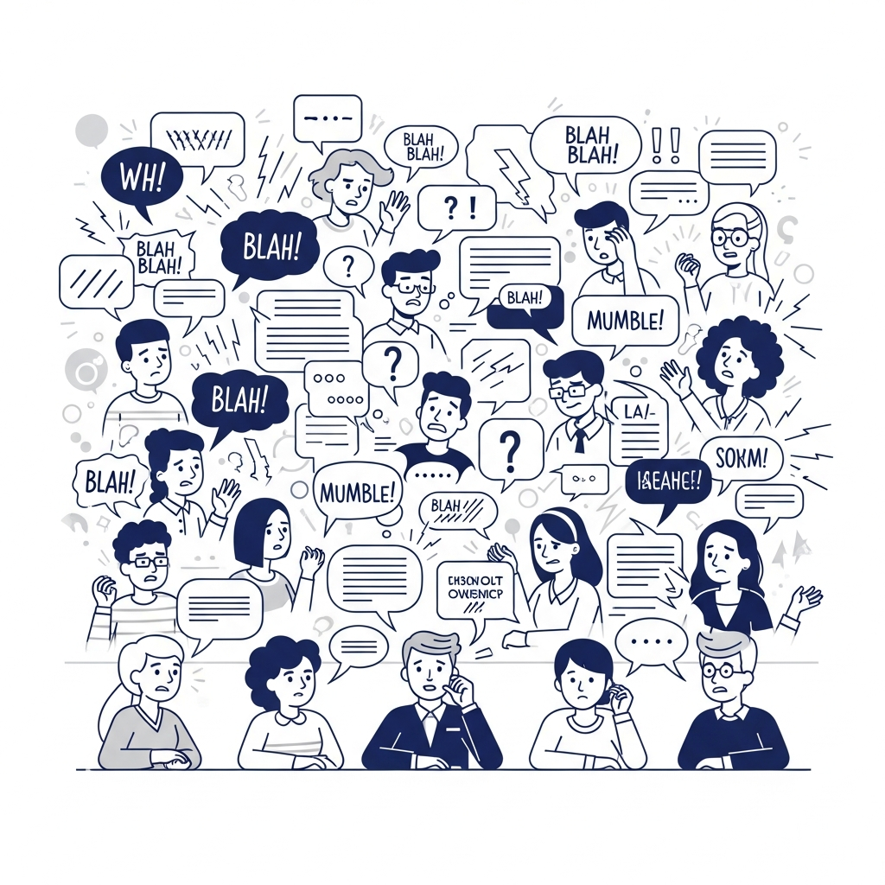

Turn Chaos into Structure
An AI-powered knowledge synthesizer that converts unstructured discussions into clear, interactive learning maps.

The solution: Knowledge Synthesizer captures and maps them.
How It Works
Go from noise to knowledge in four simple steps.

Capture Input
Select your source material. Use Live Audio for real-time meetings, paste a Transcript, or upload a pre-recorded Voice File.

Set Context
Tell the AI the format of the conversation. Choose Roundtable for open discussion, Survey for Q&A, or Debate for opposing views.

AI Synthesis
Our engine connects to Together.ai APIs to extract keynotes, generate detailed summaries, and construct memory maps in real-time.

Visual Insight
Receive a structured Knowledge Graph. Identify consensus, visualize friction points, and download the synthesized report.
The Problem: Lost Insights
Classroom discussions are goldmines of insight, yet they often evaporate the moment the bell rings. Without structure, valuable arguments get lost in the noise, making it nearly impossible to review who said what or track how ideas evolved. This lack of retention turns dynamic debates into fleeting memories rather than lasting learning resources.

The Solution: AI Synthesis
Our advanced AI doesn't just transcribe; it understands. It listens to the audio, filters out the noise, and identifies the core logic within the conversation. By extracting key concepts, mapping arguments to counterarguments, and highlighting open questions, the system transforms raw audio into a clear, structured narrative ready for analysis.
The Benefit: Visual Knowledge
Transform linear conversations into interactive visual landscapes. Students and educators can navigate through complex debates at a glance, instantly spotting the flow of logic, identifying consensus, and pinpointing unresolved friction. This visual approach deepens comprehension and allows for rapid review of hour-long sessions in just minutes.

Processor
Select your input and wait for learning.
1. Input
2. Protocol
Synthesis Report
Session ID: #8X-2991 • Status: ● Completed
Generating brief...